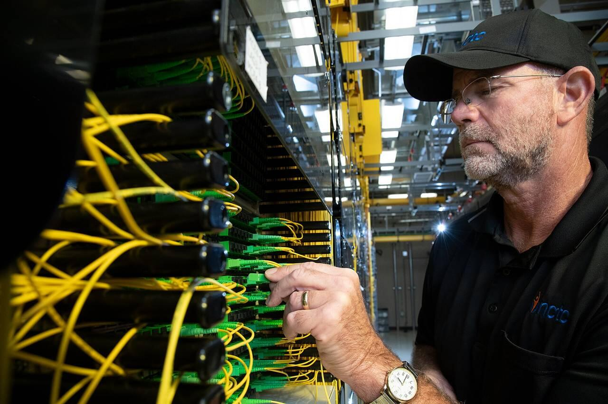
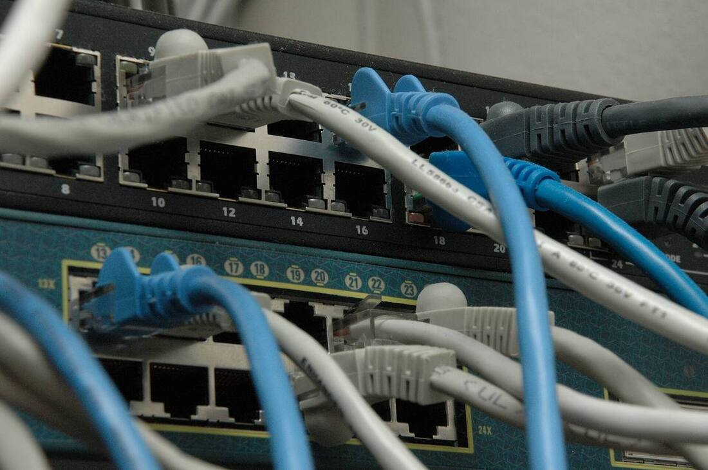
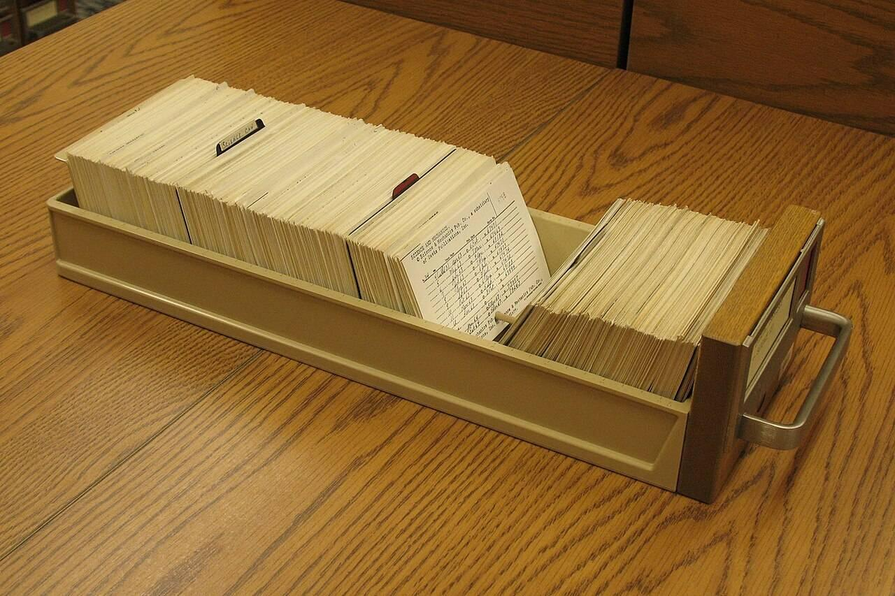
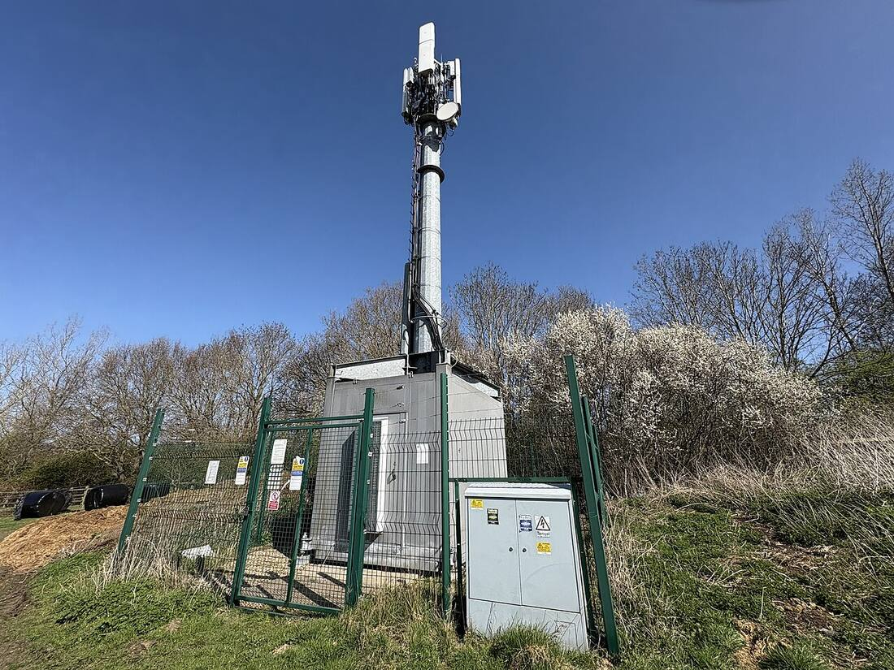
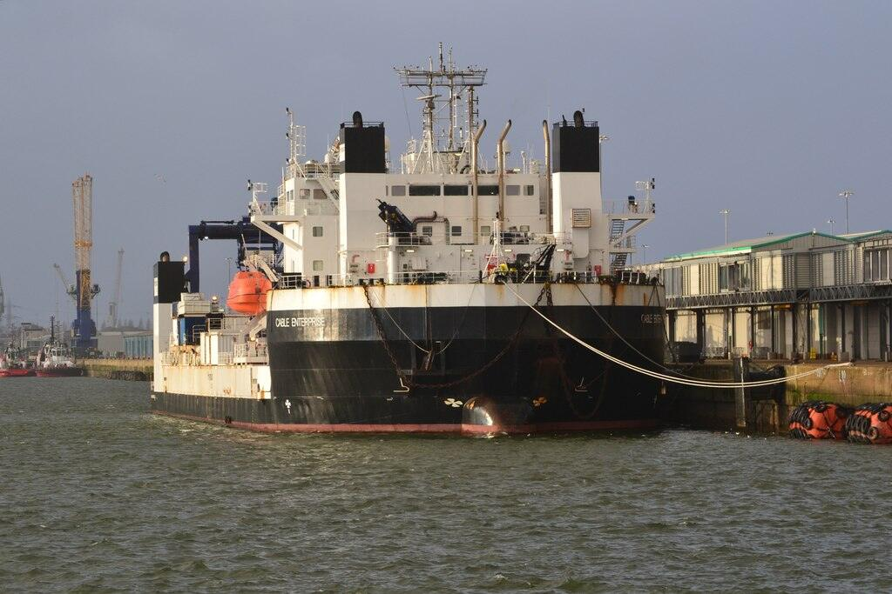
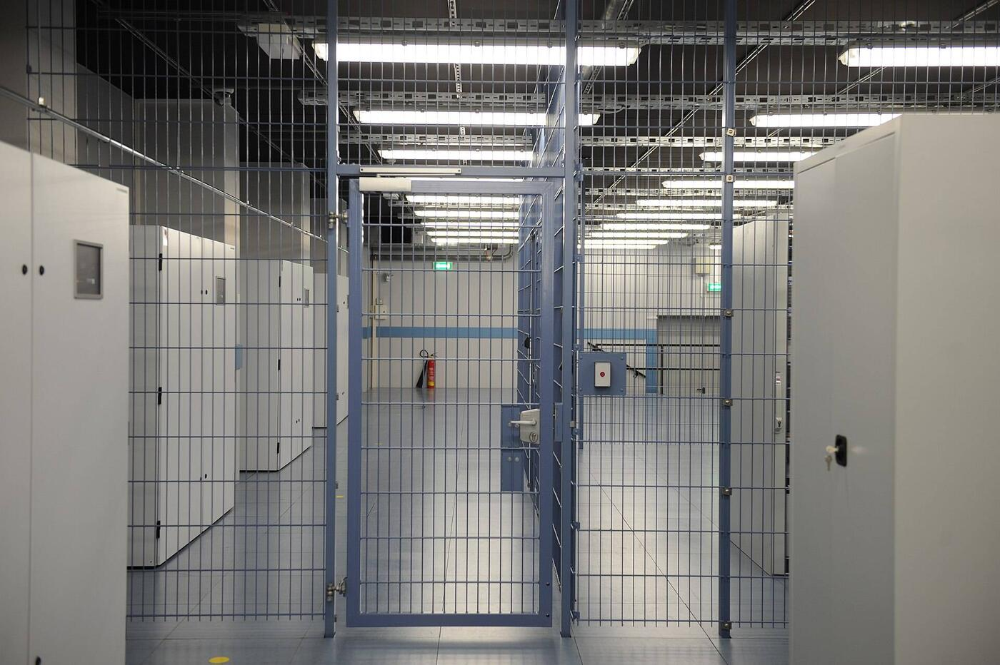
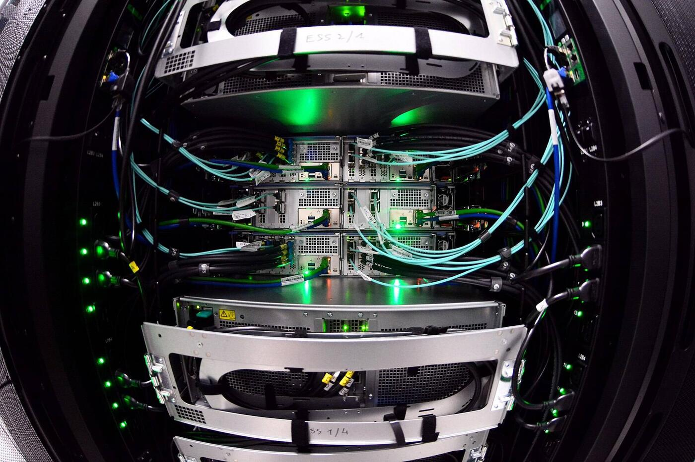
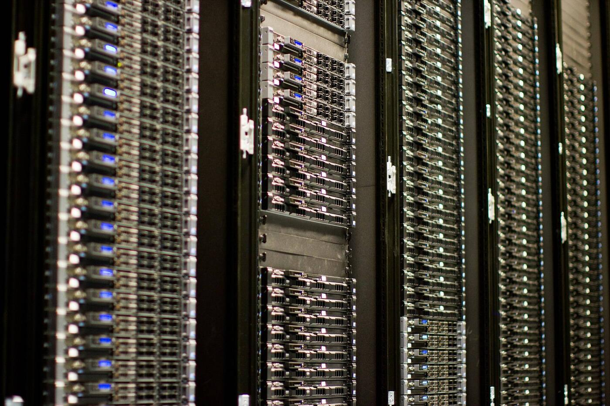

How the internet moves data
The whole walkthrough as text: 14 chapters, from your tap to the ocean floor and back.
01A network of networks
What “the internet” really is · Where it happens: Everywhere
Tap send. In a fraction of a second, your message can cross an ocean. Where does it actually go?

The internet isn’t one machine or one company. It’s a huge number of separate networks, run by phone companies, universities, cloud companies and more, that agree to carry each other’s traffic.

The ITU estimates that in 2026, 76% of the world’s people are online: about 6.3 billion. About 2 billion are still offline.

6.3 billion: people online in 2026 (76%); 2 billion offline [1]
It is surprisingly physical: copper and glass cables under streets and oceans, radio links, and buildings full of routers. Satellites carry only a tiny share: about 0.37% of US international capacity.

~0.37%: of US international capacity is satellite (FCC, via TeleGeography) [2]
Let’s follow one message from a phone in Mumbai to a server in London, and back.
- The internet is many separate networks that agree to carry each other’s traffic.
- It is mostly physical: cables, radio links and buildings full of routers.
02Packets
Small envelopes of data · Where it happens: Your device
Your photo isn’t sent in one piece. It’s cut into small packets: little envelopes of data.

Every packet has a header, like an envelope: where it came from, where it’s going, and which piece it is.
Packets may take different paths and arrive out of order. The receiver puts them back together into your photo.

This is packet switching: many people’s packets share the same cables, taking turns, so no line sits idle waiting for one conversation.
- Data is cut into packets, each with a header saying where it is going.
- Packets share cables and are reassembled at the end.
03Addresses
Every device needs a number · Where it happens: Your device and router
Every device on the internet has an IP address. The original version, IPv4, uses 32-bit addresses, usually written as four numbers like 192.0.2.1.

32 bits allow about 4.3 billion addresses: fewer than the people now online. Europe’s registry, RIPE NCC, handed out its last free IPv4 addresses in November 2019.
~4.3 billion: possible IPv4 addresses (2³²) [3]
The newer IPv6 uses 128-bit addresses, written like 2001:db8::1. That’s enough for every device many, many times over.
128 bits: IPv6 address size (IPv4: 32 bits) [4]
At home, your router usually shares one public IPv4 address between all your devices, swapping addresses as packets go in and out. This is called NAT.
- IPv4 addresses are 32 bits (about 4.3 billion); IPv6 addresses are 128 bits.
- Home routers share one public IPv4 address using NAT.
04DNS
The internet’s phone book · Where it happens: Resolvers and name servers in data centers
You type a name, like example.com. But computers need a number. DNS, the Domain Name System, turns the name into an IP address.

Your device asks a resolver, usually run by your provider. If it doesn’t know the answer, it asks a root server, which points it to the servers for .com…
…which point it to example.com’s own authoritative servers, which give the final answer. The resolver remembers it for a while, so the next lookup is instant.
There are 13 named root server authorities, run by 12 independent organisations, answering from more than 2,000 copies around the world.

2,046: root server instances, 12 operators (Nov 2026) [7]
- DNS turns names into IP addresses: resolver → root → top-level domain → authoritative server.
- Answers are cached, so repeat lookups are fast.
05The first mile
From your hand to your provider · Where it happens: Your home, the mast, your ISP
Your phone sends the packet by radio: over Wi-Fi to your router, or straight to a mobile mast.

From there it travels over copper, fibre or cable to your internet service provider (ISP): the company you pay for internet.
Your ISP’s building is the on-ramp. From here, your packet joins the bigger network.
- Wi-Fi or a mobile mast carries your packet to your provider’s network.
06Routers and hops
Pass it on · Where it happens: Network buildings along the way
A router reads each packet’s destination address and sends it one step closer: a “hop”. It doesn’t know the whole route, only the best next step.
Each packet carries a counter called time to live. Every router lowers it by one; at zero the packet is dropped, so a lost packet can’t circle forever.
TTL: time to live: one less at every hop [3]
The tool traceroute uses exactly this trick to list every router on the way to a destination.
- Routers forward packets one hop at a time; time to live stops packets looping forever.
07BGP
How networks find each other · Where it happens: Border routers of every network
Each big network is an autonomous system, with its own number. Networks use BGP, the Border Gateway Protocol, to tell their neighbours which addresses they can reach.

BGP: exchanges “network reachability information” [8]
These announcements spread from network to network, and each one picks a path. That’s how the internet keeps working as networks join, leave or break.
BGP mostly trusts what it hears. If a network wrongly announces addresses that aren’t its own, traffic can flow the wrong way until it’s fixed. Newer checks, like RPKI, help catch this.
- BGP lets networks announce which addresses they can reach; mistakes can misroute traffic.
08Internet exchanges
Where networks meet · Where it happens: Internet exchange points (IXPs), in data centers
Networks need to swap traffic. At an internet exchange point (IXP), many networks plug into one shared switch and exchange traffic directly.
Swapping traffic locally keeps trips short and cheap: two people in the same city don’t need their packets sent abroad and back.
Exchanges usually live in the same kind of data center you toured in Issue 01, in its meet-me rooms. PeeringDB keeps a public list of networks and exchanges.
- Internet exchanges let many networks swap traffic directly, keeping it local.
09Undersea cables
The internet’s ocean floor · Where it happens: The seabed and cable landing stations
To cross oceans, data rides undersea cables. TeleGeography tracks more than 600 active and planned submarine cables.

600+: active and planned submarine cables (2026) [2]
Together they stretch more than 1.5 million kilometres. (The routes on our map are illustrations, not real cable paths.)
1.5 million km+: of submarine cable in service [2]
For most of the way, a cable is about as wide as a garden hose. At its heart are hair-thin glass fibres carrying light, wrapped in layers of protection.
Cables come ashore at landing stations, and from there they connect to data centers and exchanges over land.
Cables do break: about 200 faults a year, and fishing gear and ship anchors cause around two-thirds of them. Special repair ships fix them at sea.
~200: cable faults a year (ICPC, via TeleGeography) [2]
Cables are designed to last at least 25 years, though many are retired earlier when newer cables carry far more.
25 years: minimum design life of a submarine cable [2]
- Undersea cables carry data between continents; about 200 faults a year are repaired by special ships.
10Speed and distance
Light has a speed limit · Where it happens: Inside the glass
In glass fibre, light travels about 200,000 km per second: about two-thirds of its speed in a vacuum.
200,000 km/s: speed of light in glass fibre [15]
Mumbai to London is about 7,200 km in a straight line, so even light needs about 72 ms for the round trip. Real cables are longer than a straight line, so real trips take longer.
≈ 72 ms: Mumbai ↔ London round trip at light speed, straight line [15]
Every router and every queue adds a little more delay. The total delay is called latency, and it’s why services put servers close to their users.
- Light in fibre covers about 200,000 km/s, so distance sets a minimum delay.
11Delivery rules
TCP, UDP and the padlock · Where it happens: Your device and the server
TCP gives reliable, in-order delivery: if a packet is lost, it’s sent again, and the receiver puts everything in order. Web pages and file downloads use it.
UDP just sends, with no resending: delivery isn’t guaranteed. Video calls and games often prefer it, because a late packet is useless anyway.

HTTPS wraps the conversation in TLS encryption. Every router on the way can carry your data, but none can read it. That’s the padlock in your browser.

- TCP resends lost packets and keeps order; UDP does not. HTTPS (TLS) encrypts the conversation.
12Bringing data closer
Caches and CDNs · Where it happens: Cache servers near you
Popular content is copied to servers near you: a content delivery network, or CDN. Your request is answered nearby instead of from across the world.

That’s how a video can start almost instantly. Netflix’s Open Connect, in Issue 04, even puts its boxes inside internet providers.

Caches are refreshed in the background. Rarely requested files still come from the original server.

- CDNs keep copies of popular content close to users.
13When things break
Detours · Where it happens: The whole network
In 2008, damage to several undersea cables in the Mediterranean and the Middle East slowed the internet for users in the Middle East and India.
Usually you never notice a cut: traffic is rerouted over other cables and paths. That’s why networks use several cables and several routes.
Not every outage is a cable. Routing mistakes and DNS problems can take services offline even when every cable is fine.
- Traffic reroutes around cable cuts; outages can also come from routing or DNS mistakes.
14Journey’s end
One tap, around the world · Where it happens: Everywhere
One tap: a DNS lookup, your router, your provider, routers and BGP, an exchange, an undersea cable, a data center, and back, often in well under a second.
Next time a page loads instantly, picture the threads of glass on the ocean floor.
- One request crosses many networks, cables and buildings, usually in well under a second.
Sources
- ITU, Facts and Figures / ICT statistics (2026): 76% of the world’s population online, about 6.3 billion people; 2 billion offline
- TeleGeography, Submarine Cable FAQs (2026): 600+ active and planned cables; 1.5 million+ km; garden-hose width; ~200 faults a year (ICPC data); 25-year design life; satellites ~0.37% of US international capacity (FCC)
- RFC 791, Internet Protocol (IPv4): 32-bit addresses; time to live
- RFC 8200, Internet Protocol, Version 6 (IPv6): addresses grow from 32 to 128 bits
- RIPE NCC, IPv4 run-out: final IPv4 pool exhausted in November 2019
- RFC 1034, Domain Names: Concepts and Facilities (DNS)
- IANA, Root Servers: 13 named authorities; root-servers.org: 2,046 instances run by 12 independent operators (Nov 2026)
- RFC 4271, A Border Gateway Protocol 4 (BGP-4): exchanging network reachability information
- PeeringDB: public database of networks, internet exchanges and facilities
- RFC 9293, Transmission Control Protocol (TCP): reliable, in-order byte stream with retransmission
- RFC 768, User Datagram Protocol (UDP): delivery and duplicate protection are not guaranteed
- RFC 8446, The Transport Layer Security (TLS) Protocol Version 1.3
- Wikipedia, Traceroute
- Wikipedia, 2008 submarine cable disruption
- Physics: light in glass fibre travels at about 200,000 km/s (about two-thirds of its speed in a vacuum); distances are great-circle distances between city centres
- Coastlines: Natural Earth 1:110m land (public domain), via the world-atlas package
Photo credits
Real photos from Wikimedia Commons under the free licences shown.
- Optical fibre carrying light: Hustvedt, Wikimedia Commons, CC BY-SA 3.0. Resized for the web.
- A telecom technician patching fibre: U.S. Department of Agriculture Lance Cheung/Multimedia PhotoJournalist, Wikimedia Commons, Public domain. Resized for the web.
- Code on a screen: software watching the machines: Markus Spiske markusspiske, Wikimedia Commons, CC0. Resized for the web.
- Real undersea cable samples, heavy armour to lightweight: Lonnie Hagadorn, Wikimedia Commons, CC BY-SA 4.0. Resized for the web.
- Container cranes: goods packed into standard boxes: Calistemon, Wikimedia Commons, CC BY-SA 4.0. Resized for the web.
- A railway switching yard: choosing the next track: 4300streetcar, Wikimedia Commons, CC BY 4.0. Resized for the web.
- Network cabling in a data center: Victor Grigas, Wikimedia Commons, CC BY-SA 3.0. Resized for the web.
- Network switches and their cables: ShakataGaNai, Wikimedia Commons, CC BY-SA 3.0. Resized for the web.
- A library card catalogue: an index for finding things: Michael Holley Swtpc6800, Wikimedia Commons, Public domain. Resized for the web.
- A server hall at CERN, Geneva: Florian Hirzinger - www.fh-ap.com, Wikimedia Commons, CC BY-SA 3.0. Resized for the web.
- A mobile phone mast: Diacius, Wikimedia Commons, CC BY-SA 4.0. Resized for the web.
- Air traffic control: directing traffic: Senior Airman John Wright, Wikimedia Commons, Public domain. Resized for the web.
- A cable ship (Cable Enterprise) in port: David Martin, Wikimedia Commons, CC BY-SA 2.0. Resized for the web.
- A Formula One wheel gun: spares changed in seconds: Rich Jones from United Kingdom, Wikimedia Commons, CC BY 2.0. Resized for the web.
- A locked customer cage: Virtuo Doc, Wikimedia Commons, CC BY-SA 4.0. Resized for the web.
- Inside a computing rack (Ifremer’s Datarmor centre): Gregory Rocher / Ifremer, Wikimedia Commons, CC BY 4.0. Resized for the web.
- Server racks at the Wikimedia Foundation: Victor Grigas, Wikimedia Commons, CC BY-SA 3.0. Resized for the web.
- Racks full of servers: BalticServers.com, Wikimedia Commons, CC BY-SA 3.0. Resized for the web.